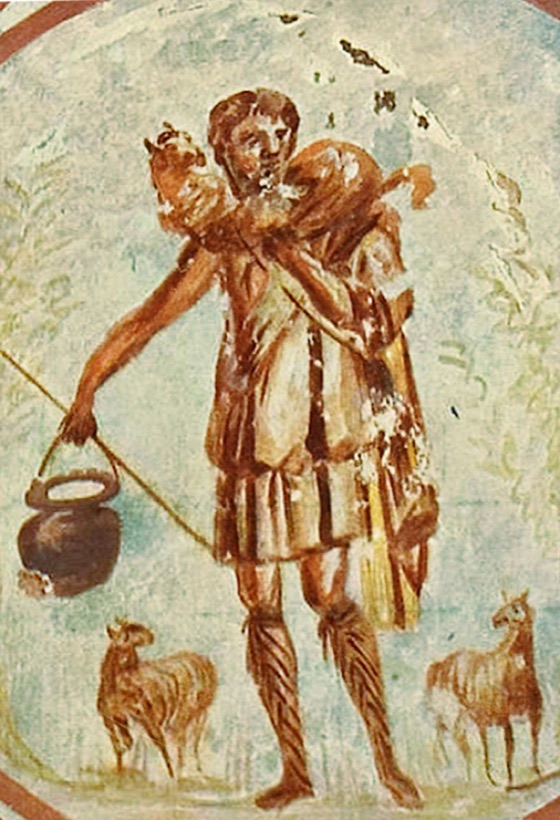
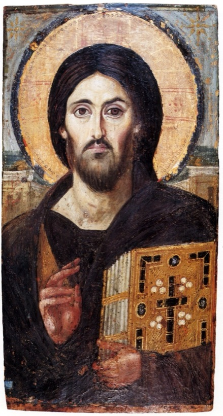
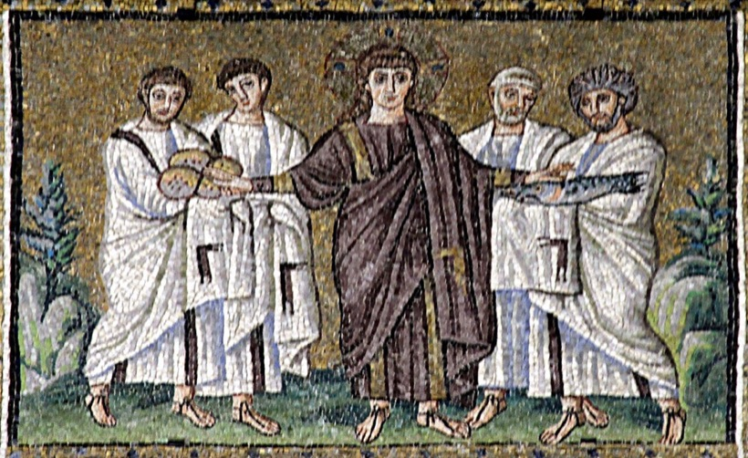
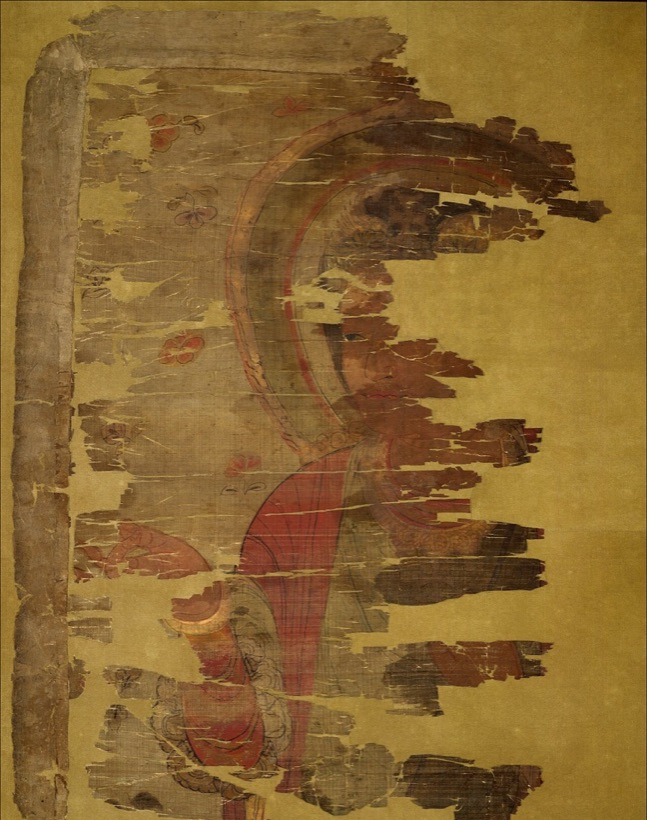

Qui era realment Jesús?
Si tanques els ulls i imagines Jesús, probablement veus un home alt, blanc, de cabells llargs i castanys i ulls clars. Cap text antic no el descriu així. Aquesta és la distància entre el jueu galileu del segle I que reconstrueixen la història i l'arqueologia, la cara que Occident li va acabar posant —i tot allò d'ell que avui ens sorprendria.
L'any 1940, en un estudi de Chicago, un il·lustrador publicitari anomenat Warner Sallman va acabar un retrat a l'oli que havia dibuixat per primer cop al carbó setze anys abans.1 Hi apareixia un home blanc, il·luminat des de dalt com una estrella de cinema, amb els cabells ondulats castany clar, la barba polida i els ulls clars. Durant la Segona Guerra Mundial, l'associació YMCA i l'Exèrcit de Salvació en van repartir milions de targetes de butxaca entre els soldats aliats. Al cap de poques dècades, aquell quadre —Head of Christ— s'havia imprès més de 500 milions de vegades.1
Aquell retrat, multiplicat després per les pel·lícules de Hollywood, va fer una feina silenciosa: va fixar dins del nostre cap com hauria de ser Jesús. Però quan els historiadors, els arqueòlegs i els antropòlegs reculen dos mil anys fins a la Galilea del segle I, gairebé res d'aquella imatge sobreviu. No quadra la cara, ni l'alçada, ni els cabells, ni la roba, ni la llengua, ni tan sols la idea moderna que solem tenir del que predicava.
Per entendre qui era realment el Jesús històric —l'home de carn i ossos que la història pot reconstruir sense fer actes de fe ni donar res per sabut— convé començar des de zero, peça per peça: primer el seu nom i el seu poble, després el seu cos, després el llarg viatge de la seva cara fins a l'occidentalització moderna i, finalment, les sorpreses més grans del seu món.
Un nom corrent en un poble diminut
La primera sorpresa comença pel mateix nom. Al segle I, ningú no l'anomenava «Jesús» ni tenia «Crist» de cognom. En la seva llengua materna —l'arameu, una llengua semítica molt pròxima a l'hebreu— es deia Yešūaʿ (forma curta de l'hebreu Yehōšūaʿ, el mateix nom que avui traduïm com a Josuè). «Jesús» és el resultat d'adaptar aquell nom primer al grec (Iēsoûs) i després al llatí (Iesus). I Crist no era cap cognom: és la traducció grega (Christós) de la paraula hebrea Mašīaḥ (Messies), que vol dir literalment «ungit», un títol honorífic reservat a reis o enviats de Déu.2
Avui «Jesús» ens sona únic, però al seu país era tan habitual com Marc o Jordi a Catalunya. Ho sabem amb xifres exactes gràcies a la historiadora Tal Ilan, que va recopilar tots els noms jueus documentats en ossaris (les caixes de pedra on es dipositaven els ossos dels difunts), papirs, inscripcions i textos de Palestina entre el 330 aC i el 200 dC, i a l'anàlisi estadística posterior de Richard Bauckham.3 D'entre 2.625 homes jueus registrats, Yešūaʿ era el sisè nom més comú del país: el portava aproximadament un de cada vint-i-sis homes. I Maria (Mariam) era el primer nom de dona: més d'una de cada cinc dones jueves s'anomenava així.
És per aquest motiu tan quotidià que els textos antics havien d'afegir sempre un sobrenom o el poble d'origen per no confondre la gent: Jesús de Natzaret, Simó Pere, Judes Iscariot o Maria Magdalena. Com passar llista en una classe on hi ha quatre Maries i tres Joseps.3
On va créixer aquest Yešūaʿ? A Natzaret, un poblet agrícola de muntanya al nord de Palestina —a la regió de Galilea— tan irrellevant que no apareix esmentat ni una sola vegada a l'Antic Testament ni a les cròniques de l'historiador jueu Flavi Josep. Les excavacions arqueològiques mostren un llogaret sense muralles, sense carrers pavimentats ni edificis públics monumentals, amb cases humils de pedra i tova i pedreres locals. Segons les estimacions de Jonathan Reed i James Strange, hi vivien entre 200 i 480 habitants; les excavacions més recents de Ken Dark amplien el marge fins a uns 400–1.000 habitants.4
A només una hora llarga a peu de Natzaret hi havia Sèforis, la gran capital galilea que el governant local Herodes Antipes estava reconstruint a l'estil grecoromà (uns 8.000–12.000 habitants). I al sud hi havia Jerusalem, la ciutat del Temple, que en època normal acollia entre 20.000 i 80.000 persones (la xifra encara es debat), però que durant la festa de Pasqua es podia omplir de 300.000 o 400.000 pelegrins. A l'altra punta del Mediterrani, Roma rondava el milió d'habitants.5
També la imatge del «fuster» de taller tranquil que fa mobles de fusta necessita una correcció. A l'Evangeli de Marc (el text narratiu més antic, cap a l'any 70), els veïns de Natzaret anomenen Jesús amb el mot grec téktōn.6 En una Galilea rocosa i amb poca fusta, un téktōn no era un ebenista de classe mitjana, sinó un artesà manual o paleta que treballava la pedra, les bigues, el fang, les eines del camp i petites construccions. Era un ofici físic i modest, socialment per sota dels pagesos propietaris de terra.6
En aquell món rural, gairebé ningú no sabia llegir ni escriure. Segons l'estudi de referència de William Harris, l'alfabetització a tot l'Imperi romà amb prou feines arribava al 10 %; a la Palestina romana, la historiadora Catherine Hezser estima que només un 3 % de la població sabia llegir textos —i menys d'un 1 % en pobles pagesos com Natzaret.7 Això obre un debat acadèmic fascinant: l'Evangeli de Lluc mostra Jesús desenrotllant el llibre d'Isaïes i llegint a la sinagoga, però historiadors com Chris Keith sostenen que, com a artesà rural, probablement coneixia les Escriptures de memòria per tradició oral, mentre que d'altres com John P. Meier deixen oberta la possibilitat que hagués après una lectura bàsica de l'hebreu.7 El que és segur és que Jesús no va deixar mai ni una sola línia escrita.
Com era físicament? El que diuen els ossos i el que callen els textos
Aquí arriba una dada que sorprèn molta gent: cap dels quatre evangelis no descriu mai la cara, l'alçada, els cabells ni el color de pell de Jesús.8 L'única pista física indirecta que hi trobem és gairebé còmica: la nit que els guàrdies van a detenir-lo a Getsemaní, Judes els ha de donar un senyal —fer-li un petó— per identificar-lo entre els seus companys (Mc 14,44). Dit d'una altra manera: Jesús no destacava enmig d'un grup de jueus galileus del segle I.
Aleshores, com sabem quin aspecte tenia aproximadament? La historiadora Joan E. Taylor (King's College London) va aplegar el 2018 totes les proves disponibles: esquelets jueus excavats en ossaris de Judea, tèxtils i sandàlies conservats al desert de Judea (Masada i Qumran), pintures de la regió i textos antics.8 El resultat desmunta de dalt a baix el cànon europeu i cinematogràfic:
Primer, l'alçada. L'anàlisi d'ossos (estudi osteològic) de Yossi Nagar i Hagit Torge sobre les tombes jueves de l'època del segon Temple de Jerusalem (períodes hel·lenístic i romà primerenc) situa l'alçada mitjana d'un home adult de Judea en 1,66 metres (i 1,47 m en les dones).9 L'únic home crucificat del segle I que l'arqueologia ha trobat a Jerusalem —un jueu anomenat Yehohanan, encara amb un clau de ferro d'11,5 cm travessant-li el taló— feia 1,67 metres.10 A la necròpolis jueva de Jericó, els homes feien de mitjana 1,69 m —i l'arqueòloga Rachel Hachlili hi va descobrir un individu extraordinari d'1,885 metres que la seva pròpia família havia batejat a l'ossari amb el sobrenom de «Goliat».11 Si Jesús hagués fet l'alçada habitual d'un actor modern de Hollywood, al segle I l'haurien vist com un gegant.
Segon, el to de pell i els ulls. Sovint s'intenta sortir del pas dient que Jesús tenia la «pell bronzejada», però aquesta expressió pot resultar un eufemisme enganyós, com si partíssim d'un europeu blanc que ha pres el sol. Els jueus de la Judea i la Galilea del segle I eren població de l'Orient Mitjà: segons la síntesi de Joan E. Taylor, el més probable és una pell marró olivàcia o bruna, ulls marrons foscos i cabells castanys molt foscos o negres —una aparença comparable a la de poblacions del Pròxim Orient que mantenen una forta continuïtat regional, com els jueus iraquians actuals que cita la mateixa historiadora, o als rostres dels retrats romans del Faium (Egipte). A sobre d'aquesta pigmentació natural, treballar a l'aire lliure com a artesà i caminar sota el sol de Galilea li hauria enfosquit i curtit encara més la pell. Tot i que al Mediterrani oriental hi havia variació natural —i les categories racials modernes no existien al segle I—, el seu punt de partida no era pas la pell pàl·lida del nord d'Europa.8
Tercer, els cabells i la barba. Al segle I, els homes jueus i mediterranis duien els cabells curts. De fet, l'apòstol Pau —que escriu cap a l'any 55, només vint-i-cinc anys després de la mort de Jesús— recorda als corintis que «els cabells llargs són un deshonor per a l'home».12 L'única excepció jueva coneguda era el vot de nazireat (que prohibia tallar-se els cabells, però també beure vi), i els evangelis mostren repetidament Jesús bevent vi —fins al punt que els seus crítics l'anomenaven «golut i bevedor». Quant a la barba, la llei bíblica (Lv 19,27) prohibia afaitar-se els costats de la barba, de manera que el més probable és una barba curta i natural, lluny de les barbes llargues de filòsof grec dels segles posteriors.8
Quart, la roba. Oblida la túnica blanca llarga fins als peus. Com la majoria de treballadors del Mediterrani oriental, Jesús portava un chiton (una túnica curta de llana sense tenyir, fins als genolls), un mantell rectangular de llana (himation) i sandàlies simples de cuir com les trobades a Masada i Qumran. I un detall revelador que passa desapercebut: l'Evangeli de Marc explica que els malalts li suplicaven «que els deixés tocar ni que fos la borla del seu mantell».13 La paraula grega (kráspedon) designa els tzitzit, els serrells rituals que la Torà (la llei jueva) mana cosir a les quatre cantonades del mantell de tot home jueu observant.13
El 2001, l'artista forense britànic Richard Neave va fer famosa a la BBC una reconstrucció facial a partir de tres cranis jueus del segle I: pell olivàcia, nas ample, cabell curt arrissat i barba curta. És útil per trencar el tòpic europeu, però convé ser precisos: no és un retrat de Jesús (no en conservem el crani), sinó un tipus estadístic d'un home de Judea, i Joan Taylor recorda que les parts toves —llavis, punta del nas, expressió— continuen sent especulatives.14
Com va canviar la seva cara en dos mil anys
Si el Jesús real era un jueu del Llevant de cabells curts i pell marró olivàcia, com vam acabar amb un home blanc de cabells llargs castanys i ulls blaus? No va passar en un sol dia, sinó en sis grans onades visuals al llarg de vint segles. Durant els dos primers segles no ens n'ha arribat cap retrat —els primers seguidors eren jueus i respectaven la prohibició d'imatges. I quan per fi apareixen les primeres pintures, al segle III, guarden una sorpresa monumental: Jesús no tenia barba.15
Baixa per recórrer al mapa i a la línia del temps 24 obres reals verificades que expliquen aquesta metamorfosi, des de Síria i les catacumbes de Roma fins a Taüll, Amsterdam, Eisenach i Chicago.
Un jove imberbe d'estil grecoromà. La pintura narrativa més antiga conservada de Jesús no és a Europa, sinó a Dura-Europos (Síria, c. 240–256 dC, avui a Yale): un noi imberbe, de cabells curts i túnica curta. El mateix passa a les catacumbes de Roma (el Bon Pastor), al mosaic britànic de Hinton St Mary i al sarcòfag vaticà de Juni Bas (359). L'art paleocristià li manlleva la cara jove d'Apol·lo i d'Hermes.15
El gir imperial: barba, cabells llargs i tron. Quan el cristianisme esdevé la religió de l'Imperi romà, la imatge canvia. A la catacumba de Commodil·la (finals s. IV) i a Santa Pudenziana (c. 401–417) apareix un Crist barbut i majestuós, inspirat en Zeus i en l'emperador. A la basílica de Sant'Apollinare Nuovo (Ravenna, c. 500–526) fins i tot conviuen tots dos models cara a cara: jove i imberbe als miracles de la paret nord, barbut a la Passió de la paret sud. El Pantocràtor (del grec, «totpoderós») del Sinaí (s. VI) i la primera moneda d'or amb el rostre de Crist, encunyada per Justinià II (692–695), segellen el patró bizantí.16
Cada cultura l'adapta, però una falsificació fixa Europa. Al segle IX, a les coves de Dunhuang (Xina), una seda cristiana vesteix la figura com un bodhisattva budista (encara es debat si és Jesús o un sant). A Catalunya, el Pantocràtor de Sant Climent de Taüll (1123) reprodueix el poder bizantí; a Etiòpia, els Evangelis de Zir Ganela (1400–1401) el dibuixen amb trets locals. Però a l'Europa medieval comença a circular la Carta de Lèntul, una falsificació del segle XIII–XIV que es fa passar per un informe romà «de primera mà» i descriu cabells color avellana amb ratlla al mig i barba partida. Jan van Eyck (1432–1440) li dona un realisme flamenc captivador.17
El Renaixement europeu... i la rebel·lió de Rembrandt. Leonardo da Vinci (c. 1495–1498) i sobretot Albrecht Dürer —que el 1500 s'autoretrata explícitament en la posa frontal de Crist, amb pell molt pàl·lida i rínxols llargs— converteixen Jesús en un europeu del nord o del sud. Però a mitjan segle XVII, a Amsterdam, Rembrandt fa una cosa insòlita: l'inventari dels seus béns del 1656 recull un «cap de Crist pintat del natural» («Een Christus tronie nae't leven»), i els historiadors de l'art coincideixen que va prendre com a model un jove jueu real del seu propi barri (Jodenbreestraat).18
Racialització europea i estandardització a Chicago. Al segle XIX, alguns autors europeus comencen a qüestionar l'origen jueu de Jesús —de la Galilea «mixta» d'Ernest Renan (1863) al racisme explícit de Houston Stewart Chamberlain (1899)— fins a l'aberració del règim nazi: el 6 de maig de 1939 s'inaugura a Eisenach un institut eclesiàstic per «desjudaïtzar» la Bíblia i fabricar un «Jesús ari».19 L'any següent, el 1940, a Chicago, Warner Sallman pinta Head of Christ seguint la tradició romàntica alemanya de Heinrich Hofmann (1889): més de 500 milions de còpies graven a foc el Jesús blanc nord-americà.1
Cinema, miralls globals i retorn a Judea. Hollywood converteix la pintura de Sallman en carn i ossos: Jeffrey Hunter (1961) i sobretot Robert Powell a Jesus of Nazareth (1977), a qui Franco Zeffirelli va demanar que no parpellegés i li va perfilar els ulls blaus per fer-los hipnòtics. Mentrestant, fora d'Occident, artistes com el coreà Kim Ki-chang (1952–1953) vesteixen Jesús amb hanbok tradicional, i l'arqueologia moderna (Neave 2001, Taylor 2018) ens recorda que el punt de partida era un poblet de Galilea.1420
Dades reals. Catàleg verificat de 24 fites històriques i museístiques (200–2001) sobre mapa Equal Earth (Natural Earth 110m). Passa el cursor o toca qualsevol punt del mapa o de la cinta temporal.
Per entendre fins a quin punt el canvi és radical, res no supera mirar les obres cara a cara. En menys de tres segles, Jesús passa de ser un jove sense barba ni cabells llargs a convertir-se en un sobirà barbut i frontal.










.jpg){kind=link}



.jpg){kind=link}


Nota d'arxiu: els Evangelis de Zir Ganela (1400–1401) citats al mapa pertanyen a la Morgan Library (reproducció digital subjecta a permís del museu, consultable aquí); en el seu lloc mostrem aquest evangeliari etíop coetani en domini públic del Walters Art Museum.
Hi ha una occidentalització moderna de Jesús?
Sí, i no és només una qüestió del segle XVI o de color de pell. De fet, la gran estandardització blanca de Jesús és un fenomen sorprenentment modern, del segle XX, impulsat per la impremta de masses nord-americana, el cinema i la publicitat.121 I encara hi ha una segona occidentalització més subtil, però potser més profunda: la cultural i ideològica.

.jpg){kind=link}


Sobre Head of Christ de Warner Sallman (1940): l'obra continua protegida per drets d'autor (Warner Press; domini públic el 2036 als EUA i el 2039 a Europa) i per això no la reproduïm aquí; es pot veure en línia a la Col·lecció Warner Sallman d'Anderson University.
Fa més d'un segle, dos pensadors europeus ja van clavar el diagnòstic. El 1906, el teòleg i metge Albert Schweitzer va repassar totes les biografies modernes que s'havien escrit sobre Jesús i va arribar a una conclusió demolidora: cada època hi havia trobat els seus propis pensaments, i cada autor «l'havia creat d'acord amb el seu propi caràcter».22 Tres anys després, el 1909, el jesuïta irlandès George Tyrrell —responent al teòleg protestant liberal alemany Adolf von Harnack, que havia dibuixat un Jesús moral modern— ho va resumir amb una imatge inoblidable que sovint s'atribueix per error a Schweitzer:
«El Crist que veu Harnack, mirant enrere a través de dinou segles de foscor catòlica, és només el reflex d'una cara protestant liberal vista al fons d'un pou profund.»
Al llarg dels segles XX i XXI, Occident no ha deixat de mirar dins d'aquest pou. El 1925, el publicista nord-americà Bruce Barton va publicar The Man Nobody Knows —el llibre de no-ficció més venut als Estats Units el 1926 segons Publishers Weekly— on presentava Jesús com «el fundador dels negocis moderns», un executiu carismàtic que «va agafar dotze homes dels estrats més baixos i els va forjar en una organització que va conquerir el món».23 Com documenten els historiadors Stephen Prothero (2003), Edward Blum i Paul Harvey (2012), Kristin Kobes Du Mez (2020) i James Crossley (2012), després van arribar el Jesús hippie dels seixanta, el Jesús guerrer viril i nacionalista de certa dreta evangèlica nord-americana, i també el Jesús coach espiritual o activista progressista contemporani.24
Aquesta projecció moderna no és una teoria abstracta: avui tenim dades empíriques que la mesuren. D'una banda, les enquestes de YouGov al Regne Unit (2021) i als Estats Units (2020) revelen una inèrcia visual enorme: el 58 % dels britànics diuen que solen veure Jesús representat com un home blanc i només el 22 % com algú de l'Orient Mitjà, malgrat que una clara majoria (68 % al Regne Unit i 65 % als EUA) ja considera perfectament acceptable un Jesús de l'Orient Mitjà.25 D'altra banda, un estudi experimental publicat a PLOS ONE el 2018 (Jackson, Hester i Gray, amb 511 cristians nord-americans i 1.200 avaluadors) va demanar als participants que reconstruïssin visualment el rostre de Déu triant entre 300 parells de cares: el rostre resultant —molt influït per la imatge de Jesús— era jove, masculí i caucàsic, però canviava sistemàticament segons l'edat, l'atractiu i la política de qui el dibuixava.26
Si col·loquem en un sol mapa conceptual les grans imatges de Jesús que ha fabricat la història —des del consens històric sobre el jueu del segle I fins als «Jesús a la carta» d'avui—, veiem fins a quin punt el viatge cap a Occident l'ha anat desplaçant tant de les seves arrels jueves com del seu missatge apocalíptic original. Baixa per recórrer el pou de Tyrrell.
El punt de partida històric. Al quadrant superior esquerre hi ha el consens acadèmic contemporani (E. P. Sanders, Paula Fredriksen, Geza Vermes, Bart Ehrman, Amy-Jill Levine): un jueu observant del segle I, immers en les esperances d'Israel, convençut que Déu estava a punt d'intervenir en la història i executat per Roma.27
El Crist Emperador. Quan el cristianisme es fusiona amb l'Imperi romà, el predicador rural es transforma en sobirà còsmic: manté el pes polític i col·lectiu, però comença a allunyar-se del món jueu de Galilea.16
Els «Jesús a la carta». Avui el mirall es bifurca: per a uns és un defensor masculí de la pàtria i el mercat (Du Mez, 2020); per a d'altres, un mestre zen del benestar individual o un activista secular modern (Crossley, 2012). Tots dos tenen un tret en comú: esborren el jueu apocalíptic del segle I.24
Esquema historiogràfic (posicions conceptuals, no dades numèriques), basat en Schweitzer (1906), Tyrrell (1909), Heschel (2008), Blum & Harvey (2012), Crossley (2012) i Du Mez (2020).
Cinc coses del Jesús històric que sorprenen des d'avui
Quan deixem de projectar-hi els nostres valors moderns i llegim les fonts antigues amb ulls d'historiador, apareix un personatge molt més estrany, intens i fascinant del que solen mostrar les postals de Nadal. Aquestes són cinc realitats que xoquen frontalment amb la imatge occidental habitual.
No era cristià —i era molt més pròxim als fariseus del que pensem
Jesús va néixer, va resar, va peregrinar al Temple de Jerusalem i va morir com un jueu observant. Mai no va fer servir la paraula «cristià» (un mot que apareix anys després de la seva mort a Antioquia). Durant segles, la tradició occidental va pintar els fariseus —un moviment laic de renovació religiosa jueva— com a enemics hipòcrites i oposats a Jesús. Però els historiadors moderns (com E. P. Sanders i Amy-Jill Levine) han demostrat que passava just el contrari: Jesús discutia tant amb els fariseus precisament perquè compartien terreny comú (la fe en la resurrecció, la pietat popular, el debat viu sobre la Torà). Eren baralles de família dins del judaisme, com les disputes entre les escoles d'Hillel i Xammai, els dos grans mestres jueus de l'època.27
Creia que la fi d'aquest món era imminent
Avui sovint llegim Jesús com un mestre atemporal de pau interior que parla d'anar al cel després de morir. Però des d'Albert Schweitzer fins a E. P. Sanders, Paula Fredriksen i Bart Ehrman, el consens acadèmic majoritari el situa com un profeta apocalíptic jueu.28 Quan anunciava que «el Regne de Déu és a prop», volia dir literalment que Déu estava a punt d'intervenir a la Terra, enderrocar els poders injustos (inclosa Roma) i inaugurar un món nou dins d'aquella mateixa generació. Els textos més antics ho conserven sense filtres: «Alguns dels qui són aquí no moriran sense haver vist arribar amb poder el Regne de Déu» (Mc 9,1) i «No passarà aquesta generació sense que tot això hagi succeït» (Mc 13,30).28
Aquesta urgència extrema explica frases que des d'una vida moderna sonen impossibles: no acumular diners, no preocupar-se per què menjaràs demà, deixar-ho tot a l'instant. No eren consells d'economia domèstica per a un món estable; eren instruccions d'emergència per a algú convençut que el rellotge de la història estava a punt d'arribar a zero. (Una minoria d'estudiosos als anys noranta, com John Dominic Crossan, el va interpretar com un savi no apocalíptic, però avui la lectura apocalíptica continua sent la majoritària.)28
Tenia germans —i la seva família va pensar que havia perdut el seny
En la imaginació moderna solem visualitzar una «Sagrada Família» petita, tranquil·la i unida. Però l'Evangeli de Marc (el més antic) recull dues escenes sorprenents. A Mc 6,3, els veïns de Natzaret es pregunten si aquell home no és «el fuster, el fill de Maria i germà de Jaume, de Josep, de Judes i de Simó», i afegeixen que les seves germanes viuen allà mateix. I abans, a Mc 3,21, els seus propis familiars el van a buscar per endur-se'l a casa «perquè deien: —Ha perdut el seny!».29
Més enllà dels evangelis, tant l'apòstol Pau (cap a l'any 50, Ga 1,19) com l'historiador jueu no cristià Flavi Josep (any 93–94, Antiguitats jueves XX, 200) anomenen Jaume «el germà de Jesús».29 Com s'interpreta aquest mot grec (adelphós)? La majoria d'historiadors crítics el llegeixen en sentit literal: germans i germanes biològics més petits. En canvi, les dues grans tradicions eclesiàstiques antigues —en defensar des del segle IV la virginitat perpètua de Maria— els van interpretar de dues maneres diferents: la tradició catòlica (des de sant Jeroni, c. 383) com a cosins, i la tradició ortodoxa oriental (recollint una idea ja present al Protoevangeli de Jaume del segle II i defensada per sant Epifani) com a germanastres d'un matrimoni anterior de Josep.29
La seva missió era per a Israel —i té frases que avui incomoden
Una sensibilitat occidental moderna tendeix a imaginar Jesús com un humanista universal sense fronteres ni aspreses. Però els historiadors es fixen en una eina molt útil anomenada criteri d'incomoditat: si un text antic conserva una escena que resultava incòmoda per a l'Església posterior, és molt probable que tingui un nucli històric real (ningú no s'inventa coses que li compliquen la vida).
Dos passatges compleixen aquest criteri amb escreix. En un, una dona estrangera (sirofenícia) li suplica que curi la seva filla i Jesús li respon amb duresa: «No està bé de prendre el pa dels fills i tirar-lo als gossets» —tot i que la resposta enginyosa de la dona acaba fent-lo cedir (Mc 7,24–30). A Mateu (15,24), encara és més directe: «Únicament he estat enviat a les ovelles perdudes de la casa d'Israel».30 En l'altre, exigeix trencar amb la lleialtat familiar tradicional —a Lluc 14,26 fa servir el verb grec miseō («odiar», que moltes traduccions modernes suavitzen per «estimar menys» que a ell) i a Lluc 9,60 diu a un deixeble que vol enterrar el seu pare: «Deixa que els morts enterrin els seus morts». En una societat on enterrar el pare era un deure sagrat, era una sacsejada radical.30
Roma el va matar per política —però no era un guerriller armat
La crucifixió no era un càstig religiós jueu (que era la lapidació), sinó una execució política romana reservada a esclaus i rebels contra l'Imperi. El rètol penjat a la creu ho deixa clar: «El rei dels jueus» (Mc 15,26). L'historiador romà Tàcit confirma dècades després que va ser executat pel prefecte Ponç Pilat.31
Ara bé: era Jesús un revolucionari armat? La historiadora Paula Fredriksen ha formulat un argument molt convincent que demostra que no. Si Pilat hagués cregut que Jesús liderava una cèl·lula insurgent armada, el protocol militar romà exigia capturar i crucificar també els seus seguidors. Però Pilat va executar Jesús tot sol i els seus deixebles van poder quedar-se lliures a Jerusalem. La conclusió històrica és neta: Jesús no portava armes, però enmig d'una Jerusalem atapeïda de pelegrins per Pasqua, un predicador carismàtic que anunciava un «regne» nou i tombava taules al pati del Temple era una espurna que Roma preferia apagar ràpidament amb una execució exemplar.31
Per posar ordre a tot el que hem vist —i no barrejar el que la història sap amb seguretat del que continua en debat—, aquesta taula resumeix dotze contrastos clau entre la imatge occidental habitual i l'evidència històrica.
Mirar més enllà del mirall
Al final d'aquest recorregut, el quadre de Warner Sallman penjat a milions de parets des del 1940 diu molt sobre els Estats Units del segle XX, i molt poc sobre la Galilea del segle I. I el mateix passa amb totes les altres versions que cada època ha anat modelant: el Crist emperador de Constantinoble, el Jesús europeu del Renaixement, la falsificació racista d'Eisenach o el Jesús executiu, guerrer o terapeuta dels nostres dies.
Res d'això no treu valor al fet que cada cultura —a Etiòpia, a Corea, a Guatemala o a Europa— hagi pintat Jesús amb els trets de la seva gent. El problema apareix quan oblidem que allò és un mirall i el confonem amb una fotografia. Treure-li les capes de pintura occidental no fa el Jesús històric més petit ni menys interessant: al contrari. Ens retorna un home concret, d'un metre seixanta-sis, que parlava arameu en un poblet de pedra de Galilea, duia serrells al mantell, creia que el món estava a punt de capgirar-se i va morir en una creu romana —sense sospitar que dos mil anys després mig planeta encara estaria discutint quin aspecte tenia i què volia dir.
Paraules clau
- Yešūaʿ i Crist
- Yešūaʿ era el nom arameu de Jesús (variant curta de Josuè). Crist (Christós) no era un cognom, sinó la traducció grega de Messies («ungit»).
- Téktōn
- Paraula grega (Mc 6,3) sovint traduïda per «fuster», que al segle I designava un artesà manual de la pedra, la fusta i la construcció rural.
- Tzitzit (kráspedon)
- Serrells o borles rituals que la llei jueva mana portar a les quatre puntes del mantell. Els evangelis (Mc 6,56; Mt 9,20) indiquen que Jesús en duia.
- Apocalipticisme
- Corrent del judaisme antic que esperava una intervenció imminent i directa de Déu per posar fi al mal i instaurar un nou ordre al món.
- Criteri d'incomoditat
- Mètode dels historiadors segons el qual un detall incòmode per a la comunitat que el transmet (com la crucifixió o la família pensant que Jesús «ha perdut el seny») té altes probabilitats de ser històric.
- Carta de Lèntul
- Text llatí falsificat als segles XIII–XIV que fingia ser un informe d'un funcionari romà descrivint Jesús amb cabells color avellana i barba partida. Va influir enormement l'art renaixentista.
- Inculturació
- Procés pel qual una comunitat adapta una figura religiosa als trets físics, vestits i codis artístics de la seva pròpia cultura (com el Jesús en hanbok coreà o en miniatures etíops).
Metodologia
Aquest article separa estrictament dades reals verificades d'esquemes historiogràfics. Les dades onomàstiques provenen del corpus de Tal Ilan (2002) depurat per Richard Bauckham (2006/2017), corregint l'error de denominador dels percentatges masculins documentat per Luuk van de Weghe (NTS 2023). Les estimacions demogràfiques del segle I inclouen sempre els marges reals de debat arqueològic. Les mesures d'alçada provenen d'estudis osteològics publicats d'esquelets jueus del segle I, període del Segon Temple (Nagar & Torge 2003; Haas 1970; Zias & Sekeles 1985; Hachlili & Smith 1979), sense barres d'error inventades. El catàleg visual de 24 fites es basa en catàlegs museístics i monografies d'història de l'art verificades. Les dades de percepció moderna provenen directament de YouGov (2020–2021) i de l'estudi revisat per experts de Jackson, Hester & Gray (PLOS ONE, 2018). El gràfic del «pou de Tyrrell» és explícitament un esquema historiogràfic conceptual, no una mesura numèrica.
Notes
Cada número del text porta aquí. La fletxa (↑) et torna al punt on llegies. Les cites bíbliques enllacen amb la Bíblia catalana interconfessional (BCI); els números entre claudàtors, amb les fonts.
- ↑ Warner Sallman, Head of Christ (1940, basat en un carbó del 1924), distribuït per Kriebel & Bates i repartit a milions de soldats aliats per la YMCA i l'Exèrcit de Salvació; més de 500 milions d'impressions documentades per David Morgan [1] [2].
- ↑ Etimologia de Yešūaʿ / Yehōšūaʿ i del títol Messies / Christós: Geza Vermes i E. P. Sanders [11].
- ↑ Onomàstica jueva de Palestina (330 aC – 200 dC): Tal Ilan (2002) i Richard Bauckham (2006/2017, Taules 6 i 7: 2.625 registres masculins, Yešūaʿ = 99 [3,77 %, 6è]; 328 femenins, Mariam = 70 [21,34 %, 1a]). Precisió sobre els denominadors: Luuk van de Weghe (NTS 2023); debat estadístic: Gregor & Blais (2023) i van de Weghe & Wilson (2024) [3].
- ↑ Demografia arqueològica de Galilea: Jonathan L. Reed (2000: Natzaret 200–400, Cafarnaüm 1.000–1.500, Sèforis 8.000–12.000, Tiberíades 6.000–12.000), James F. Strange (200–480) i Ken Dark (2020: Natzaret ~400–1.000) [4].
- ↑ Població de Jerusalem: debat entre Hillel Geva (2014, ≤20.000), Jeremias (25.000–30.000), Levine (60.000–70.000) i Broshi (~80.000); afluència de Pasqua: E. P. Sanders (1992, 300.000–400.000). Roma imperial: consens ~800.000–1.000.000 vs. estimació revisionista de Glenn R. Storey (1997, ~450.000–500.000) [5].
- ↑ Jesús anomenat téktōn: Mc 6,1–6 (BCI). Anàlisi socioeconòmica de l'ofici rural: John P. Meier (1991), Geza Vermes (1973) i E. P. Sanders (1993) [11].
- ↑ Alfabetització antiga: William V. Harris (1989, ~10 % Imperi romà) i Catherine Hezser (2001, ~3 % Palestina romana, <1 % en pobles rurals). Debat sobre l'alfabetització de Jesús: Lc 4,16–20, Chris Keith (2011) i John P. Meier (1991) [6].
- ↑ Absència de descripció física als evangelis, vestimenta (chiton, himation, sandàlies de Masada i Qumran), cabells, barba i complexió del segle I: Joan E. Taylor (2018) [7].
- ↑ Alçada mitjana jueva del segle I (homes 166 cm, dones 147 cm): Yossi Nagar & Hagit Torge (2003, IEJ 53), corroborada per Baruch Arensburg & Yoel Rak (1975, BASOR) i Arensburg et al. (1980, rang de mitjanes 165–169 cm) [8].
- ↑ Esquelet de Yehohanan crucificat a Jerusalem: estimació d'alçada (~167 cm) de Nicu Haas (1970, IEJ 20) i reavaluació de la crucifixió (clau d'11,5 cm al calcani dret) de Joe Zias & Eliezer Sekeles (1985, IEJ 35) [8].
- ↑ Necròpolis jueva de Jericó (mitjana masculina ~169 cm) i ossari XXI de Yeho'ezer «Goliat» (~188,5 cm): Rachel Hachlili (1979) i Rachel Hachlili & Patricia Smith (1979, BASOR 235) [8].
- ↑ Pau sobre la llargada dels cabells masculins: 1Co 11,14 (BCI) i anàlisi del vot nazireu a Taylor (2018) [7].
- ↑ «La borla del seu mantell» (kráspedon = tzitzit): Mc 6,56 (BCI), prescrit a Nm 15,38–39 i Dt 22,12 [7].
- ↑ Reconstrucció forense de Richard Neave per a Son of God (BBC, 27 de març de 2001) i valoració crítica de Joan E. Taylor (2018) [7] [9].
- ↑ Primeres representacions imberbes: Dura-Europos (c. 240–256, Yale Univ. Art Gallery 34498), Catacumbes de Priscil·la i Cal·lixt, Mosaic de Hinton St Mary (British Museum 1965,0409.1), Sarcòfag de Juni Bas (359); síntesi de Robin Margaret Jensen (2005) [10].
- ↑ Gir imperial i doble iconografia: Catacumba de Commodil·la, Santa Pudenziana (c. 401–417), Sant'Apollinare Nuovo de Ravenna (c. 500–526: imberbe a la paret nord, barbut a la sud), Pantocràtor del Sinaí (s. VI) i solidus de Justinià II (692–695 i 705–711, Dumbarton Oaks) [10].
- ↑ Seda cristiana de Dunhuang (s. IX, British Museum 1919,0101,0.48, identificació debatuda), Pantocràtor de Sant Climent de Taüll (c. 1123, MNAC 015966-000), Evangelis etíops de Zir Ganela (1400–1401, Morgan Library MS M.828; els Evangelis de Garima, 390–660 dC, no conserven retrat de Crist) i falsificació medieval de la Carta de Lèntul (s. XIII–XIV, impresa el 1474) [10] [7].
- ↑ Leonardo da Vinci (c. 1495–1498), Albrecht Dürer (Autoretrat, 1500, Alte Pinakothek) i Rembrandt, Cap de Crist (c. 1648–1656, Gemäldegalerie Berlin 811C). L'inventari de fallida del 1656 registra «een Christus tronie nae't leven» (pintat del natural); la identificació del model com un jove jueu veí de Jodenbreestraat és consens de la història de l'art: Lloyd DeWitt (ed.), Rembrandt and the Face of Jesus (Yale UP, 2011) [10].
- ↑ Ernest Renan, Vie de Jésus (1863, cap. II), Houston Stewart Chamberlain (1899) i l'Institut zur Erforschung und Beseitigung des jüdischen Einflusses auf das deutsche kirchliche Leben (fundat el 6 de maig de 1939 a Eisenach per Walter Grundmann; Die Botschaft Gottes, 1940): Susannah Heschel, The Aryan Jesus (Princeton UP, 2008) [12].
- ↑ Cinema (King of Kings 1961; Jesus of Nazareth 1977) i inculturació global: Cristo Negro de Esquipulas (1595, Quirio Cataño) i Kim Ki-chang (Vida de Jesús en hanbok, 1952–1953) [2] [10].
- ↑ Edward J. Blum & Paul Harvey, The Color of Christ: The Son of God and the Saga of Race in America (UNC Press, 2012) [2].
- ↑ Albert Schweitzer, Von Reimarus zu Wrede (1906) / The Quest of the Historical Jesus (1910, cap. I, p. 4); George Tyrrell, Christianity at the Cross-Roads (1909, p. 44, cita exacta sobre Adolf von Harnack i el «pou profund») [13].
- ↑ Bruce Barton, The Man Nobody Knows (Bobbs-Merrill, 1925; núm. 1 de no-ficció als EUA el 1926 segons Publishers Weekly) [14].
- ↑ Apropiacions culturals i polítiques modernes: Stephen Prothero (2003), Kristin Kobes Du Mez (2020) i James G. Crossley (2012) [15].
- ↑ Enquestes YouGov UK (23 de desembre de 2021, n = 1.714 adults + 1.023 persones de minories ètniques) i YouGov USA (22 de desembre de 2020, n = 1.067 adults) [16].
- ↑ Joshua Conrad Jackson, Neil Hester & Kurt Gray, «The faces of God in America», PLOS ONE 13(6): e0198745 (2018), i Nicholas Epley et al., PNAS 106(51) (2009) [17].
- ↑ Judaisme observant de Jesús i proximitat als fariseus: E. P. Sanders (1985), Amy-Jill Levine (2006) i Paula Fredriksen (1999) [11].
- ↑ Urgència apocalíptica: Mc 9,1 i Mc 13,30 (BCI); Albert Schweitzer (1906), E. P. Sanders (1985), Bart D. Ehrman (1999) i Paula Fredriksen (1999) [11] [13].
- ↑ Germans i família de Jesús: Mc 3,20–21, Mc 6,3, Ga 1,19 (BCI) i Flavi Josep, Antiguitats jueves XX, 200; lectures helvidiana, jeronimiana (catòlica) i epifaniana / Protoevangeli de Jaume (ortodoxa) [11] [18].
- ↑ Dites incòmodes des d'una perspectiva moderna: dona sirofenícia (Mc 7,24–30), missió a Israel (Mt 15,24) i ruptura familiar (Lc 14,26; Lc 9,60) [11] [18].
- ↑ Execució política romana: Mc 15,26 (BCI), Tàcit (Annals XV, 44) i argument sobre la no-detenció dels deixebles de Paula Fredriksen (1999, 2018) [11] [18].
Fonts
- Morgan, David (ed.). Icons of American Protestantism: The Art of Warner Sallman. Yale University Press, 1996 (ISBN 978-0-300-06342-4); Morgan, David. Visual Piety. University of California Press, 1998 (ISBN 978-0-520-21932-8). Col·lecció Warner Sallman: Anderson University
- Blum, Edward J. i Harvey, Paul. The Color of Christ: The Son of God and the Saga of Race in America. University of North Carolina Press, 2012 (ISBN 978-0-8078-3572-2; ressenya AHR DOI: 10.1093/ahr/118.5.1541).
- Ilan, Tal. Lexicon of Jewish Names in Late Antiquity, Part I: Palestine 330 BCE–200 CE. Mohr Siebeck, 2002 (ISBN 978-3-16-147646-4). Bauckham, Richard. Jesus and the Eyewitnesses. 2a ed., Eerdmans, 2017 (ISBN 978-0-8028-7431-3; Eerdmans). van de Weghe, Luuk. «Name Recall in the Synoptic Gospels», New Testament Studies 69.1 (2023), DOI: 10.1017/S0028688522000170. Gregor, Kamil i Blais, Brian S., JSHJ 21.3 (2023), DOI: 10.1163/17455197-bja10023.
- Reed, Jonathan L. Archaeology and the Galilean Jesus. Trinity Press, 2000 (ISBN 978-1-56338-324-3). Dark, Ken. Roman-Period and Byzantine Nazareth and its Hinterland. Routledge, 2020 (Routledge).
- Geva, Hillel. «Jerusalem's Population in Antiquity: A Minimalist View», Tel Aviv 41.2 (2014): 131–160, DOI: 10.1179/0334435514Z.00000000041. Sanders, E. P. Judaism: Practice and Belief, 63 BCE–66 CE. 1992 (ISBN 978-1-56338-016-7). Storey, Glenn R. «The population of ancient Rome», Antiquity 71.274 (1997): 966–978, DOI: 10.1017/S0003598X00085859.
- Harris, William V. Ancient Literacy. Harvard University Press, 1989 (HUP). Hezser, Catherine. Jewish Literacy in Roman Palestine. Mohr Siebeck, 2001 (Mohr Siebeck). Keith, Chris. Jesus' Literacy. T&T Clark, 2011 (ISBN 978-0-567-11972-8).
- Taylor, Joan E. What Did Jesus Look Like? Bloomsbury T&T Clark, 2018 (ISBN 978-0-567-67150-9; DOI: 10.5040/9780567671523).
- Nagar, Yossi i Torge, Hagit. «Biological Characteristics of Jewish Burial in the Hellenistic and Early Roman Periods», Israel Exploration Journal 53 (2003): 164–171. Haas, Nicu. «Anthropological Observations on the Skeletal Remains from Giv'at ha-Mivtar», IEJ 20 (1970): 38–59; Zias, Joe i Sekeles, Eliezer, IEJ 35.1 (1985): 22–27 / Biblical Archaeologist, DOI: 10.2307/3209939. Hachlili, Rachel. «The Goliath Family in Jericho: Funerary Inscriptions», BASOR 235 (1979): 31–66, DOI: 10.2307/1356554; Hachlili, Rachel i Smith, Patricia. «The Genealogy of the Goliath Family», BASOR 235 (1979): 67–70, DOI: 10.2307/1356555. Arensburg, Baruch i Rak, Yoel, BASOR (1975), DOI: 10.2307/1356441.
- BBC News. «Why do we think Christ was white?» (reconstrucció de Richard Neave per a Son of God), 27 de març de 2001. BBC News
- Jensen, Robin Margaret. Face to Face: Portraits of the Divine in Early Christianity. Fortress Press, 2005 (ISBN 978-0-8006-3678-4). DeWitt, Lloyd (ed.). Rembrandt and the Face of Jesus. Yale UP, 2011 (ISBN 978-0-300-16957-7). Catàlegs verificats: Yale (Dura-Europos) · British Museum (Hinton St Mary) · Dumbarton Oaks (Justinià II) · British Museum (Dunhuang) · MNAC (Taüll) · Morgan Library (Zir Ganela) · Alte Pinakothek (Dürer) · Gemäldegalerie Berlin (Rembrandt).
- Sanders, E. P. Jesus and Judaism (1985, ISBN 978-0-8006-2061-5) i The Historical Figure of Jesus (Penguin, 1993). Fredriksen, Paula. Jesus of Nazareth, King of the Jews (Knopf, 1999) i When Christians Were Jews (Yale UP, 2018). Levine, Amy-Jill. The Misunderstood Jew (HarperSanFrancisco, 2006). Ehrman, Bart D. Jesus: Apocalyptic Prophet of the New Millennium (Oxford UP, 1999). Meier, John P. A Marginal Jew, vol. 1 (1991). Vermes, Geza. Jesus the Jew (1973).
- Heschel, Susannah. The Aryan Jesus: Christian Theologians and the Bible in Nazi Germany. Princeton University Press, 2008 (ISBN 978-0-691-12531-2).
- Schweitzer, Albert. Von Reimarus zu Wrede (1906; Archive.org) / The Quest of the Historical Jesus (1910, p. 4; Archive.org). Tyrrell, George. Christianity at the Cross-Roads (Longmans, Green & Co., 1909, p. 44; Archive.org).
- Barton, Bruce. The Man Nobody Knows. Bobbs-Merrill, 1925 (National Humanities Center, extracte PDF).
- Prothero, Stephen. American Jesus (FSG, 2003, ISBN 978-0-374-52956-7). Du Mez, Kristin Kobes. Jesus and John Wayne (Liveright, 2020; W. W. Norton). Crossley, James G. Jesus in an Age of Neoliberalism (Routledge, 2012; Routledge).
- YouGov UK (Matthew Smith). «What race can Jesus be?», 23 de desembre de 2021 (YouGov UK). YouGov USA (Matthew Smith). «What race can Jesus and Santa be?», 22 de desembre de 2020 (YouGov USA).
- Jackson, Joshua Conrad; Hester, Neil i Gray, Kurt. «The faces of God in America: Revealing religious diversity across people and politics», PLOS ONE 13(6): e0198745 (2018), DOI: 10.1371/journal.pone.0198745. Epley, Nicholas et al., PNAS 106(51): 21533–21538 (2009), DOI: 10.1073/pnas.0908374106.
- Associació Bíblica de Catalunya, Bíblia catalana. Traducció interconfessional (BCI) (bci.cat/biblia). Flavi Josep, Antiguitats jueves XX, 200 (Univ. de Chicago). Tàcit, Annals XV, 44 (LacusCurtius).